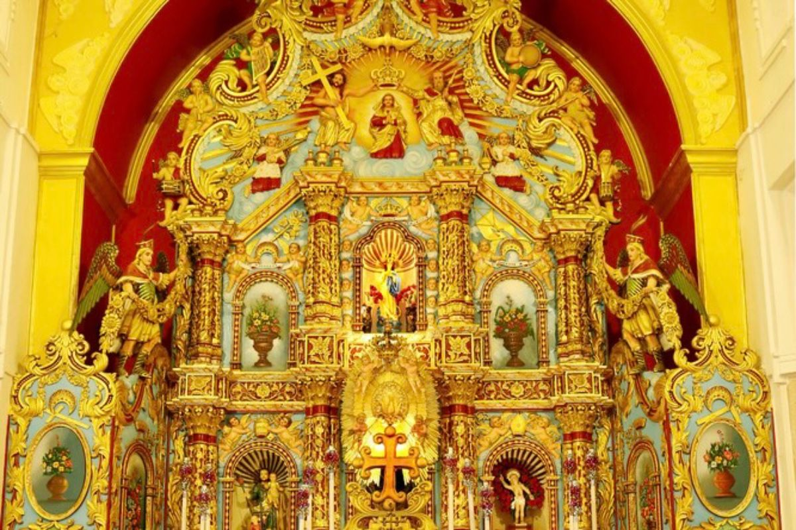
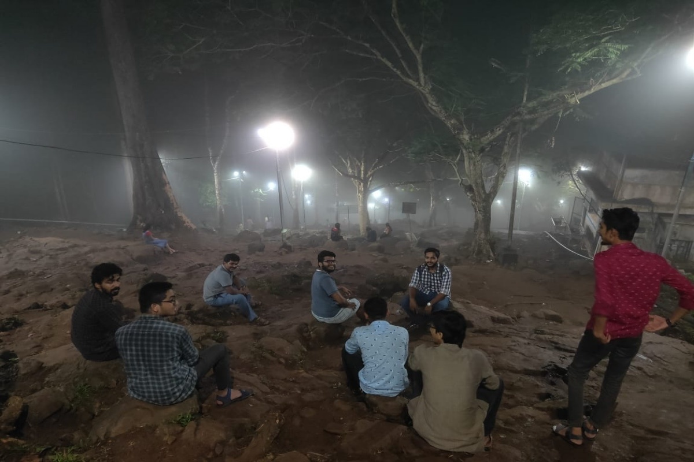

Our Events
Moments of grace, fellowship, and spiritual growth throughout the year
Monthly Night Vigil
A monthly gathering featuring praise and worship, Eucharistic Adoration, intercession, and fellowship. A night of encountering the Lord in the silence of Adoration and the joy of community prayer.
Annual Events
Special gatherings that mark our yearly journey together
Annual Retreat
A time of prayer, formation, and spiritual renewal for members. A weekend away to encounter God, deepen our faith, and recharge for the mission ahead.
Freshers Programme
Welcoming new students into our family and introducing them to the mission and community. A time of icebreakers, sharing, and warm fellowship.
Annual Trip
A time for fellowship, friendship, and creating memories together. A day or weekend of fun, bonding, and enjoying God's creation as a community.
Pilgrimages
Walking in faith, journeying together

